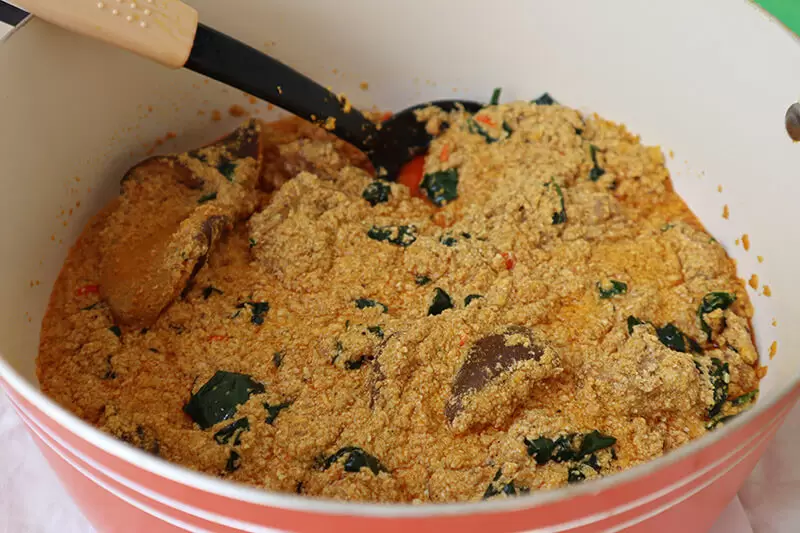

Egusi soup is a rich, spicy west-african dish made from ground melon seeds, cooked with vegetables, spices, and often meat or fish , typically served with pounded yam, garri or fufu.
rind the four cups of egusi with a dry blender or hand-grinding machine and set them aside in a bowl. Add about a cup of water to it and stir to make a very thick paste
Parboil the meat with all the ingredients, it is advisable to parboil meat with some ingredients before adding them to the principal food, this improves the taste of the meat.
Parboil for about ten minutes, then add water and cook till the meat is tender and the stock (water) is about to dry. Use two seasoning cubes, a teaspoon of salt and a half cup of sliced onions.
Pour hot water over the stockfish in a bowl and wash thoroughly to remove sand, then set aside. Also, remove the center bone from the roasted fishes, wash and set aside too.
Set your cooking pot on the fire and add 300ml of palm oil (red oil), allow to heat for a minute but do not allow to bleach. Add the egusi paste and keep stirring for the next eight to ten minutes to form seed-like crumbs.
Add the washed dry fish, stockfish, ground crayfish, a seasoning cube, ground scotch bonnet pepper, and 2 cups of water. Then cover halfway and allow boiling for the next ten minutes.
Stir occasionally to avoid burning. One spoon of ground dawadawa (local ingredients), and a taste for salt and pepper.Add a handful of sliced utazi leaves.Allow to simmer on low heat for 2 minutes, stir, and you just made a delicious pot of egusi soup
Remove from heat and let the soup sit for 5 minutes to settle.
Serve hot with a side of pounded yam, fufu, garri, or any starchy
swallow of your choice.
Egusi soup is a versatile dish, and ingredient quantities can be adjusted to suit your taste. For a richer flavor, consider adding a small amount of locust beans (iru) or extra crayfish. Ensure the pot is stirred regularly to avoid burning, and if using bitterleaf, soak or parboil it longer for a milder taste. This hearty soup is perfect for sharing with family and friends!
Link to resource : Egusi Soup Recipe